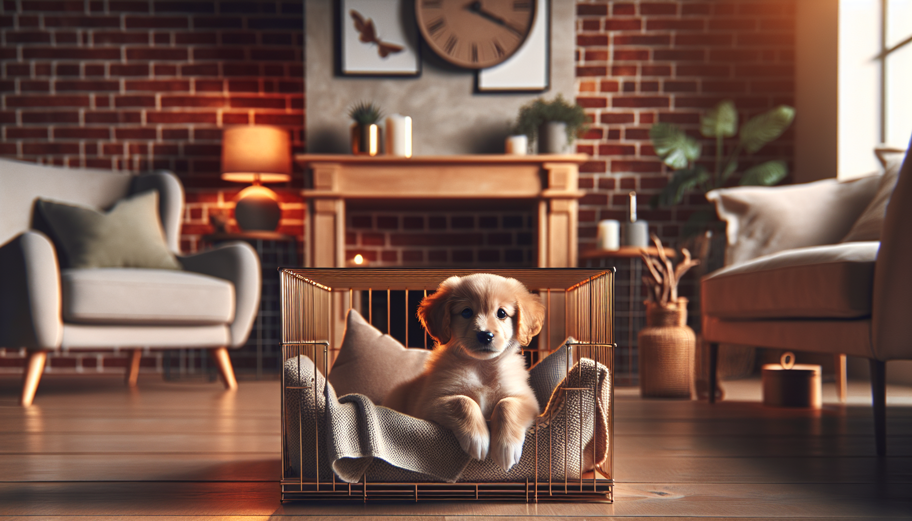

Welcoming a new puppy into your home is an exciting and joyful experience. However, it also comes with responsibilities, one of which is crate training. This process is essential for both you and your new furry friend. It offers a safe space for your puppy and helps with house training, travel, and more.
Crate training is not about confining your puppy but about providing them a personal space. Dogs are den animals and naturally seek small, secure spaces where they can relax. A crate offers them this sanctuary while helping you manage their behavior effectively.
Selecting the appropriate crate for your puppy is crucial. It should be large enough for your puppy to stand, turn around, and lie down comfortably. Consider crates with dividers that can be adjusted as your puppy grows. Material-wise, wire and plastic crates are both popular choices, each offering different benefits in terms of visibility and comfort.
Introduce the crate to your puppy gradually. Place it in a busy area of your home so your puppy feels part of the family action. Make it inviting with soft bedding and a few toys. Allow your puppy to explore the crate at their own pace without forcing them inside.
To create a positive association, start feeding your puppy their meals near or inside the crate. This helps them see the crate as a safe and pleasant place. Use treats and praise to encourage your puppy to spend time inside the crate voluntarily.
Consistency is key in crate training. Establish a routine where your puppy spends short intervals in the crate, gradually increasing the time as they become more comfortable. Ensure your puppy gets plenty of exercise and toilet breaks outside the crate to prevent any negative associations.
It's normal to face setbacks during crate training. If your puppy whines or barks, avoid letting them out while they're still making noise. Wait until they're quiet to prevent reinforcing this behavior. Patience and perseverance are essential as your puppy adjusts.
Crate training a new puppy takes time and patience, but the rewards are well worth the effort. A crate-trained puppy is typically more confident and secure, making them happier and healthier. Remember, the crate should always be a positive space for your puppy, never a place of punishment.
For more expert tips on training your new puppy, get our full Dog Training eBook series — new titles added weekly!